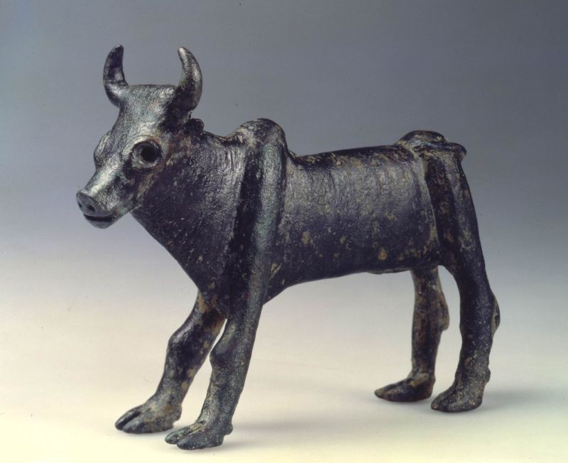
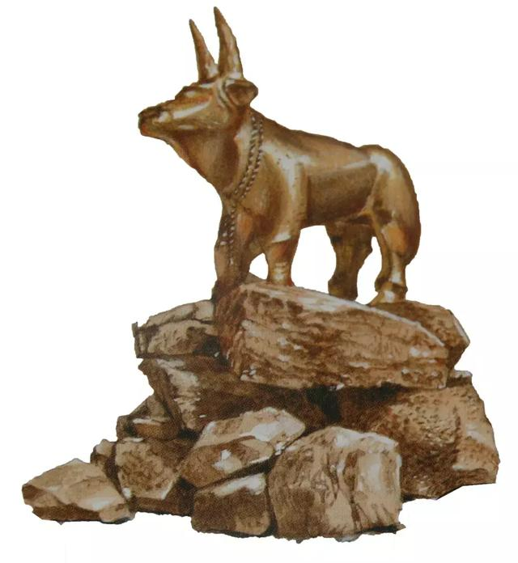

| 讀 | 默想 |
|---|---|
| 出埃及記32:1-14 | |
1 百姓見摩西遲延不下山，就大家聚集到亞倫那裡，對他說：「起來！為我們做神像，可以在我們前面引路；因為領我們出埃及地的那個摩西，我們不知道他遭了甚麼事。」 上圖：主前8世紀亞述的風暴之神Hadad（巴力的別名）石雕，出土於敘利亞北部的Arslan-Tash，現藏于盧浮宮。石雕中的巴力手持閃電，站在一隻公牛上。 |
摩西「在山上四十晝夜」（二十四18），百姓就等不住了。人的喜歡跟隨「看得見的神」，看不到「摩西」，他們就要為自己做看得見、摸得著的「神像」。 「起來」、「做」原文動詞都是命令式 ，表明百姓並不是來與亞倫商量，而是直接要求他根據百姓的決定採取行動。摩西根據葉忒羅的建議所揀選的「有才能的人，就是敬畏神、誠實無妄、恨不義之財的人」，按照「千夫長、百夫長、五十夫長、十夫長」（十八21）的組織管理層次充分商議之後，最後的決定竟然是「為我們做神像」。人實在是「肉體之中，沒有良善」（羅七18）。 「神像」原文是複數的「神」，動詞「引路」原文也是複數，表明百姓的心思還是擺脫不了埃及「眾神」的觀念。我們在難處面前，也常常在口裡承認獨一真神的時候，心裡還是倚靠人、勢力、物質等「眾神」。我們實在需要用一生去學習徹底擺脫偶像。 「領我們出埃及地的那個摩西」原文語氣很粗俗，百姓心中認定領自己「出埃及地」的是看得見的摩西，而不是那位看不見的神，所以「摩西遲延不下山」，他們也就認為神不見了。我們也常常習慣性地認定看得見的屬靈領袖，離開了教會、團契、小組的帶領者，我們就無所適從，忘了真正帶領我們的是神，始終與我們同在的是基督。 |
| 2 亞倫對他們說：「你們去摘下你們妻子、兒女耳上的金環，拿來給我。」 3 百姓就都摘下他們耳上的金環，拿來給亞倫。 4 亞倫從他們手裡接過來，鑄了一隻牛犢，用雕刻的器具做成。他們就說：「以色列啊，這是領你出埃及地的 神。」 | 亞倫沒有求告神，而是順從人意。離開聖靈的管理，所以神提醒我們「不可隨眾行惡」（二十三2）。 「金環」是神施恩讓以色列人從埃及人那裡索要來的（十二36），應該用來建造會幕，現在卻被拿來製造偶像。 百姓說：「這是領你出埃及地的神」，原文是「這些是領你出埃及地的眾神」，代詞「這」、動詞「出」和名詞「神」都是複數。就像迦南人敬拜巴力一樣，把這只公牛當作「眾神」的坐騎，用公牛來代替「眾神」。 |
| 5 亞倫看見，就在牛犢面前築壇，且宣告說：「明日要向耶和華守節。」 6 次日清早，百姓起來獻燔祭和平安祭，就坐下吃喝，起來玩耍。  上圖：以色列出土的主前12世紀公牛小像，現存於以色列博物館。這公牛像證明士師時代的以色列人繼續效法迦南人拜偶像，用公牛來代表神。 |
亞倫「在牛犢面前築壇」（5節），並且宣告「明日要向耶和華守節」，表明他並不認為自己是在「祭祀別神」（出二十二20），而是以為自己在「向耶和華守節」。今天許多人自稱信神，但所敬拜的其實是心中的「金牛犢」，只是一個符合自己想像的偶像，並非聖經裡自我啟示的獨一真神。十誡禁止人製造、敬拜偶像（二十4-6），不但不可以製造、敬拜代表假神的偶像，也不可以製造、敬拜代表真神的偶像。 百姓表面上是在「向耶和華守節」（5節），實際上已經違反了十誡；被撒但擄去了，卻還不知道。 「坐下吃喝，起來玩耍」，可能指模仿迦南崇拜中的各種淫亂行為。人若偏離神，結果是「坐下吃喝，起來玩耍」，生活行為與外邦人無異。 |
| 7 耶和華吩咐摩西說：「下去吧，因為你的百姓，就是你從埃及地領出來的，已經敗壞了。 8 他們快快偏離了我所吩咐的道，為自己鑄了一隻牛犢，向它下拜獻祭，說：『以色列啊，這就是領你出埃及地的神。』」 |
神原來一直把以色列人稱為「我的百姓」（三7、10），現在卻稱他們為「你的百姓」；神原來宣告「我是耶和華——他們的神，是將他們從埃及地領出來的」（二十九46），現在卻稱他們為「你從埃及地領出來的」。 金牛犢事件正好發生在神啟示完「山上的樣式」的時候，可以看出這場屬靈爭戰的真相：神百姓的失敗，既是因為人本相的暴露，也是由於撒但的打岔，但更有神超越一切的美意。神借著這「四十晝夜」的試驗，顯明人肉體的「敗壞」，然後神藉著摩西的代禱，給他們指明出路，啟示神計畫如何將完全「敗壞」的人從死亡中救贖出來。 |
| 9 耶和華對摩西說：「我看這百姓真是硬著頸項的百姓。 10 你且由著我，我要向他們發烈怒，將他們滅絕，使你的後裔成為大國。」 |
32:9「硬著頸項」：形容不肯讓人牽引的牛馬，表示「頑梗」。這是聖經中第一次用此比喻形容以色列人。句的直譯是：「我看這百姓，看哪，他是硬著頸項的百姓」。 32:10「你且由著我」：原文意思是「現在，不要插手干預我」。這句話暗示上帝知道摩西會出面為以色列人代求，祂要借著應允摩西的代禱，啟示祂真正的救贖計畫。 |
| 11 摩西便懇求耶和華─他的 神說
：「耶和華啊，你為甚麼向你的百姓發烈怒呢？這百姓是你用大力和大能的手從埃及地領出來的。 12 為甚麼使埃及人議論說『他領他們出去，是要降禍與他們，把他們殺在山中，將他們從地上除滅』？求你轉意，不發你的烈怒，後悔，不降禍與你的百姓。 13 求你記念你的僕人亞伯拉罕、以撒、以色列。你曾指著自己起誓說：『我必使你們的後裔像天上的星那樣多，並且我所應許的這全地，必給你們的後裔，他們要永遠承受為業。』」 14 於是耶和華後悔，不把所說的禍降與他的百姓。 |
摩西的代禱不是站在人的地位上去看事情，而是站在神的地位上來看事情，所以摸著了神的心意，清楚地把神救贖的心意表明了出來。這個代禱說出了「中保」（來七22）工作的實際，讓神心滿意足： 摩西的代禱是根據神的揀選：他不但強調以色列人是「禰的百姓」，也強調他們是「禰用大力和大能的手從埃及地領出來的」。 摩西的代禱是根據神的聖名：他求神赦免百姓，並不是以人為中心，而是為了榮耀神的名（12節）。 摩西的代禱是根據神的應許：他相信神之所以會赦免百姓，是因為祂應許的信實（13節），並不是因為人的苦苦哀求。 摩西的代禱不根據人的光景：他完全不看以色列人的實際光景如何，也不考慮他們或赦免後是否會悔改，因為他知道神所開始的工作，神必然會負責完成。 |
| 禱告：親愛的天父上帝，我感謝祢，以色列百姓雖然落入在肉體的情慾，偶像的崇拜的大罪裡。但是祢仍然藉著摩西的代禱。赦免了百姓的過犯。親愛的主耶穌，現今的世代邪惡！在我的生活中，也有許多事情影響我。使我的思想和意念，甚至行為上，做了想了祢不喜悅的事。求祢使我回轉、悔改，靠著耶穌基督的寶血的救贖。能夠勝過罪惡。 主阿！我也來到祢的面前，為我的國家禱告。我們的國家社會現在面對新冠疫情非常嚴重。使我們的生活。有很大的不安、不方便。各地有許多的動盪、許多的困苦。主阿！我懇求祢。在我們的國家掌權。使我們在上掌權的、執政的，能夠做正確的決定。藉著這個時候百姓的心，在徬徨無助，甚至絕望的時刻。求祢開啟這地百姓的心能夠向祢敞開，認識祢是創造宇宙萬物的主宰，也是拯救我們唯一真實的盼望。我也為我身邊的OOO、OOO代禱，懇求祢開啟他們願意認識祢的心，能夠明白救贖的恩典，能夠信靠祢，得著永恆的盼望與喜樂。奉耶穌基督的名禱告，阿們。 | |
神生氣了! 倒底發生了甚麼事, 神居然要將祂從埃及地所拯救、揀選的百姓滅絕呢? 接續十九章的場景, 原本神要以色列人自潔三日, 因為神要直接對以色列百姓說話, 但是百姓驚見神臨在地景象,
有雷轟、閃電和密雲, 而且有巨大的角聲, 以及西乃山全山被籠罩在煙霧之中, 像窯裏冒出來的濃煙一般; 因此, 百姓懼怕了,於是對摩西說, 他們不要神直接對他們說話, 讓摩西成為中保, 凡摩西所轉述的,
他們都會遵從.
摩西對以色列百姓說, 耶和華神如此說, 他們自己已經從天上看見神從天上對他們說話了, 讓他們體驗確實有一位領他們出埃及的大能者, 所以嚴謹他們不可為自己做或雕刻任何神像與神相配,
切不可為自己做金銀的神像. 然後摩西、亞倫和亞倫的兩個兒子, 以及以色列七十位代表的領袖就被神召聚上西乃山, 但唯獨摩西可以到山頂迎見神, 不過這一去就是四十晝夜. 百姓見摩西遲遲都沒有下來,
就懷疑摩西是否遭遇不測, 於是大家跑去亞倫那裏, 像他威脅、吵鬧, 如同無理取鬧的暴民, 逼迫亞倫為他們造神像, 好為他們繼續領路. 亞倫並沒有像摩西一樣在遇到不能解決的事情時祈求神, 乃是自己作主,
而他自作聰明, 以為反向吵鬧他的百姓要求, 要他們摘下妻子兒女耳上的金環給他, 他們就會因為捨不得把金器給他而作罷, 這樣就能解決問題, 沒想到百姓居然都給他了.
還記得當法老王在神降的九次災難之後, 氣得對摩西說, 下次見面就是他的死期. 這次, 摩西耽延四十天沒下來, 就以為摩西遭遇不測, 要為自己造神來代替摩西所說的那位. 難道沒有摩西就沒有神了嗎?
這群以色列百姓的信仰建立在哪裡呢? 我們的信仰又是建立在哪裡呢? 只有禮拜天看到教堂的建築物、看到牧者或是看到弟兄姊妹的時候, 才知道有神, 要有基督徒的榜樣, 而私底下卻過不一樣的生活,
以為沒人看見就沒有神嗎? 再者, 摩西明明在離開之前, 囑咐這群百姓, 神吩咐他們不可為自己做任何神像, 更不可用金銀來打造神像, 只因摩西遲遲沒有從山上下來, 但是濃煙壟罩西乃山的景象並沒有消失阿,
這群百姓竟糊塗到要亞倫造神來替代摩西和摩西口中的神. 他們不是不要拯救他們出埃及的神, 而是將神變成有形象的受造之物, 以為這樣就可以取代摩西不在的安全感, 就可取代看見神臨在地懼怕感,
但其實人造偶像, 無形就是把創造主變成受造之物, 人對神敬畏、敬拜的態度也隨之改變了, 他們不但向牛犢獻祭, 甚至有狂飲的縱慾大會, 有淫亂、猥褻的放縱行為產生.
況且這群百姓是經歷神在埃及降下十災的見證人, 神如何破除埃及人所崇拜的神不是神, 但他們仍然替自己造一隻金牛犢來代替神. 因此, 說穿了他們就是要用他們自己有限的頭腦限制神的能力,
無法相信神是無所不知、無所不能和無所不在的神.
摩西這幾天在山上做甚麼呢? 神除了頒布十誡, 還將十誡的真理原則, 以及會幕的藍圖等都告訴摩西, 因為神要與以色列民建立一個屬神的國度, 藉由律法和敬拜宣告他們是屬大能者的子民.
但是以色列百姓無法體會神的心意, 只因四十天之久沒有看到他們偉大的領袖, 竟然違背神的旨意, 為自己塑造神像, 破壞與神的關係. 既然百姓悖逆不要神, 那神也憤怒要滅絕他們.
【出三十二7】「耶和華吩咐摩西說： 『下去（急迫性的）吧, 因為你的百姓, 就是你從埃及地領出來的, 已經敗壞了.」百姓不是神領出來的嗎? 怎麼變成摩西呢? 表明神已經厭惡了他們,
因為他們偏離神的道, 觸犯神誡命的第一、二條, 以及發生神所厭惡的淫亂、猥褻的宗教崇拜. 於是, 神又對摩西說, 【出三十二10】「你且由著我, 我要向他們發烈怒, 將他們滅絕,
使你的後裔成為大國.」以色列人的罪甚大, 因為他們（一）忘恩負義；（二）速趨敗壞；（三）明知故犯. 『且由著我』這不是命令或不變的意志, 而是神向摩西提出的建議. 神告訴摩西,
將亞伯拉罕的後裔以色列人滅絕以後, 要把當日答應給亞伯拉罕的福分賜給摩西的後裔, 這樣也能履行神對亞伯拉罕的承諾.
如果我們是摩西, 我們會因為聽到神的這個應許而心動, 放棄作為一個牧者的職責嗎？任憑神託付給我們的羊自生自滅, 反正我家蒙福就好嗎？感謝主, 摩西沒有, 耶穌也沒有, 沒有將神託付給他們的羊隨意丟棄.
摩西為以色列人代求, 提出四個理由：1. 以色列是耶和華的子民, 不是摩西的；2. 神拯救他們出來費了很大力氣；3. 若改變初衷, 難免使神的名招埃及人譏笑；4.
根據神與亞伯拉罕、以撒、雅各之間的約, 耶和華神曾向他們的祖先保證, 要使他們的後裔成為大國, 又賜迦南地.
【出三十二14】「於是耶和華後悔,不把所說的禍降與他的百姓.」身為代禱者或牧者是否有這樣的決心保護神託付給我們的人呢？我們替別人祈求是馬馬虎虎隨意交代就好, 還是願意極力為這人是否能得救而懇求神呢？
神在這世代一直再尋找像摩西這樣的牧者, 看中他所帶領羊群的性命和靈魂. 即便我們知道這世代不信者的結局就是滅亡, 但我們肯不肯像摩西或主耶穌一樣, 願意替世人請求, 自願成為園丁來栽培每一條靈魂,
看看是否還有拯救的機會, 即便還有一絲希望, 也不輕易放棄牧者的機會, 將人從滅絕的邊緣拯救回來呢？
| 讀 | 默想 |
|---|---|
| 出埃及記32:15-24 | |
|
15 摩西轉身下山，手裡拿著兩塊法版。這版是兩面寫的，這面那面都有字， 16 是 神的工作，字是 神寫的，刻在版上。 |
「這面那面都有字」，表明石版並不大。是可以放得進約櫃的。 |
|
17 約書亞一聽見百姓呼喊的聲音，就對摩西說：「在營裡有爭戰的聲音。」 18 摩西說：「這不是人打勝仗的聲音，也不是人打敗仗的聲音，我所聽見的乃是人歌唱的聲音。」 |
「打勝仗的聲音」、「打敗仗的聲音」：原文是「打勝仗呼喊的聲音」、「打敗仗
呼喊的聲音」 「呼喊」這個字與「歌唱」這個字同一個字，意思是「大聲呼叫」 |
|
19 摩西挨近營前就看見牛犢，又看見人跳舞，便發烈怒，把兩塊版扔在山下摔碎了， 20 又將他們所鑄的牛犢用火焚燒，磨得粉碎，撒在水面上，叫以色列人喝。  |
聖經中很少記載摩西發怒，僅 出32:19,22 民16:15 出現。可見摩西真的是難以忍受眼前所見到的景象。 石版是一式兩份，摔碎石版不單只是憤怒，也意味著盟約被廢棄了。 如果按著石版上的約執行，以色列人「必要滅絕」（二十二20）。 「跳舞」指百姓「放肆」的宗教儀式。 摩西將金牛犢「用火焚燒，磨得粉碎，撒在水面上，叫以色列人喝」，這四個步驟象徵徹底毀滅偶像（王下二十三15）。 為了使百姓明白，偶像的無能，不能自保。更不能給人任何益處，反而會有害處。 |
|
21 摩西對亞倫說：「這百姓向你做了甚麼？你竟使他們陷在大罪裡！」 22 亞倫說：「求我主不要發烈怒。這百姓專於作惡，是你知道的。 23 他們對我說：『你為我們做神像，可以在我們前面引路；因為領我們出埃及地的那個摩西，我們不知道他遭了甚麼事。』 24 我對他們說：『凡有金環的可以摘下來』，他們就給了我。我把金環扔在火中，這牛犢便出來了。」 |
亞倫承認自己犯了罪，但卻為自己找理由辯護，就和亞當、夏娃一樣（創三12-13），把責任推給別人（22-23節）。這位候任大祭司是一位不配的罪人，他能擔任大祭司，完全是根據神恩典的揀選。 |
| 親愛的天父上帝，我感謝祢。雖然我是一個無知的罪人。在生活中，有意無意地還是犯罪了。懇求祢赦免我的一切罪惡過犯。讓我天天進入祢的救贖之約。亞倫雖然帶頭犯罪，百姓雖然陷入罪惡當中，背棄了祢的約。祢還是不放棄我們。祢還是呼召我們成為祭司事奉祢。我奉耶穌基督的名宣告。「偶像的權勢」在我生命當中是沒有地位的。「埋怨」在我生命當中是沒有益處的。我的生命、工作、學習，要單單倚靠神不倚靠人。在臺灣面對疫情的時刻，我來到祢的面前，持續為臺灣禱告。雖然。在疫情當中。出現許多讓我感覺到很不公平的事。我把我的思想意念交在祢的手中。求祢在臺灣繼續掌權。使教會（小組）每一位弟兄姊妹，平安度過這一次的疫情災禍。奉耶穌基督的名禱告，阿們。 | |